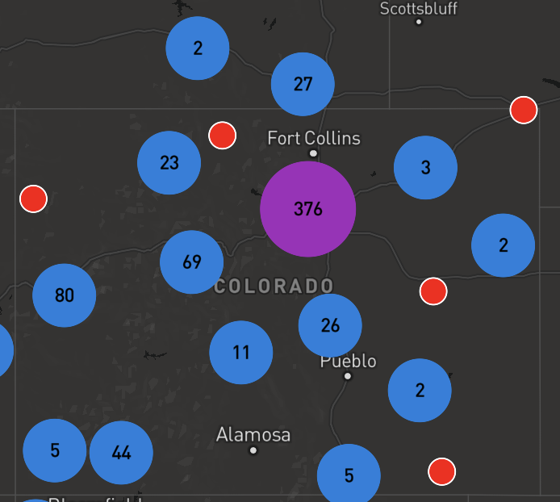
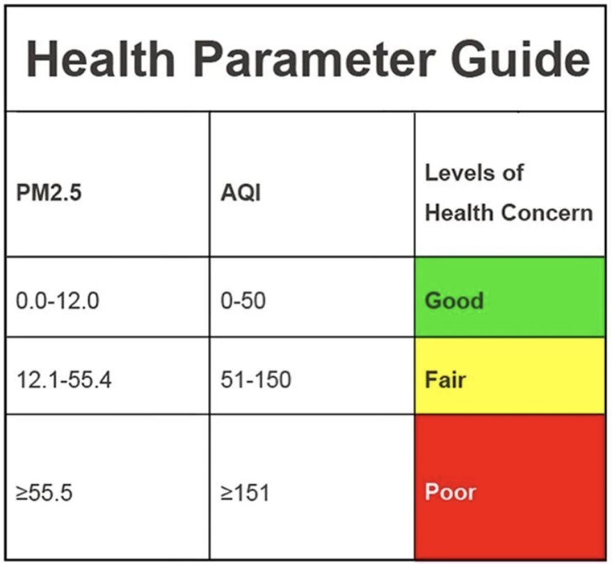

How to Use
This tool has three portions.

Map view
The first is a map that should be pretty straightforward.
You can zoom, pan, and explore all over. You can also type a location into the searchbox
and explore that way. The second and third charts have data that is hoverable
and link back to the map as well. The image on the left is a snapshot of the map
not fully zoomed in.
A key thing to note is that all the data is updated every 20-40min*. (* it
really depends on the API we are using...)

AQI Meaning
Air Quality is measured most commonly today by a reading of "PM2.5".
This is 'fine particulate matter', tiny particles that are a concern when elevated.
It refers (name gives it away a bit) to particles that are ≤2.5 microns in width.
For reference, this is only a fraction of the width of a human hair (1/30th!).
The EPA's current threshold for 'healthy' air is as follows.
Short-term (24-hr): 35 µg/m^3 | 95 AQI
Long-term (1 yr): 12µg/m^3 | 50 AQI
Keep this in mind when browsing some of the more affected sections of the world.
For more information please visit the
WHO guidelines.
Click "About" at the top of the page to access this popup again.